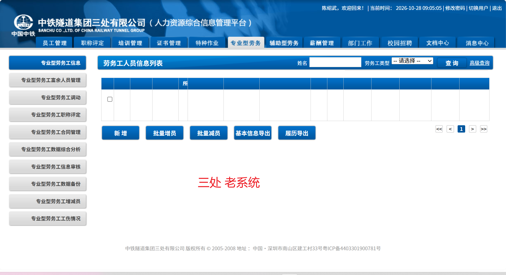
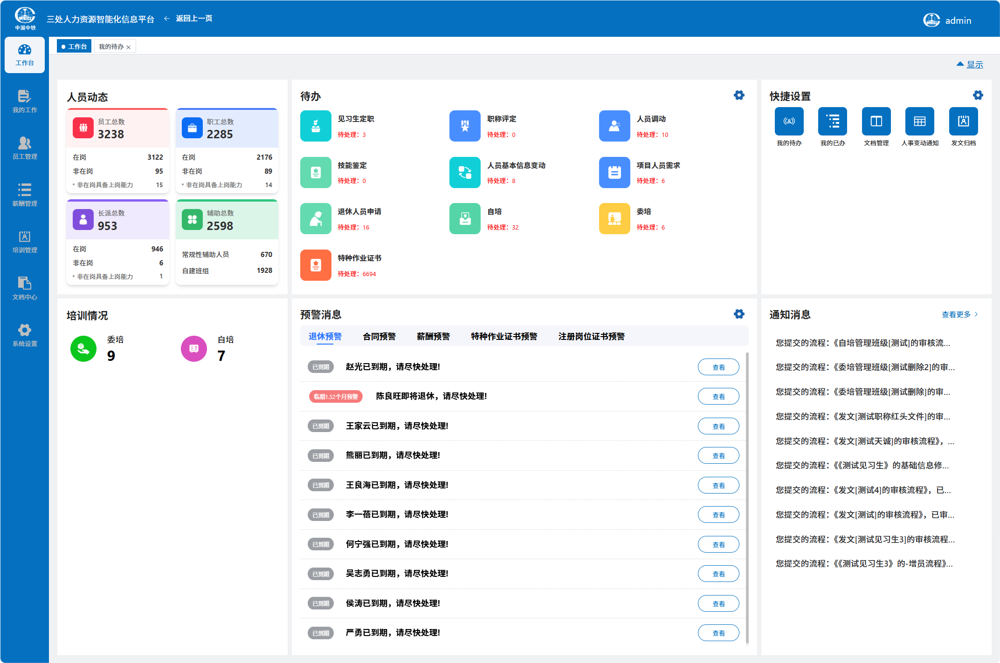

人力资源智能化管理系统
项目汇报
项目建设进度
自 2026年5月31日启用以来，累计形成需求并全部完成
功能优化132 项
Bug类问题162 项
新增需求60 项
新老系统对比：老系统界面

新老系统对比：新系统界面

员工管理
👥
员工管理
人员基本信息
辅助性人员管理
富余人员管理
奖惩处罚管理
基本信息审核
项目用工申请
人事变动
合同管理
薪酬管理
💰
薪酬管理
工资名册
发放预警
工资发放
工资支付书
拖欠统计
休假台账
培训与证书管理
🎓
培训与证书
培训计划管理
自培管理
委培管理
职工教育经费
特种作业证书
注册岗位证书
特种证书审核
退出证书台账
证书预警
文档中心
📁
文档中心
文档管理
人事变动通知
发文归档
系统设置
⚙️
系统设置
流程配置
角色管理
岗位管理
用户管理
预警规则
日志管理
三个视角看系统
同一项人事业务，在不同角色眼中有着不同的意义。
👤
员工视角
💼
HR视角
⚙️
系统视角
👤 员工视角
入职建档
入职基础信息
人员信息
家庭信息
学历信息
劳动合同
档案附件
👤 员工视角
在岗经历积累
在岗经历信息
奖惩信息
履历信息
培训信息
证书信息
职称信息
👤 员工视角
岗位调动数据联动
中铁隧道集团三处有限公司
➔
东莞地铁2334标项目部
📁
文档中心
显示相关文件记录（表示公司已经发公文）
👤 员工视角
岗位调动数据联动
中铁隧道集团三处有限公司
➔
东莞地铁2334标项目部
📝
履历信息
系统自动更新记录这段经历
👤 员工视角
岗位调动数据联动
中铁隧道集团三处有限公司
➔
东莞地铁2334标项目部
📊
干审表
数据已自动同步到干审表
💼 HR视角
数据如何形成（一级审核）
提交数据 ➔ 审核通过 ➔ 数据归档
简单直接的一级审批流，适用于常规业务。
💼 HR视角
数据如何形成（多级审核）
提交数据 ➔ 一级审核通过 ➔ 二级审核通过 ➔ 数据归档
针对复杂业务，系统支持多级审核，层层把关。
💼 HR视角
数据如何形成（驳回重审）
提交数据 ➔ 审核不通过，驳回
⬇
修改后再次提交 ➔ 审核通过 ➔ 数据归档
发现问题，退回修改，确保数据准确无误。
💼 HR视角
三条典型业务流程
流程一：新员工入职
创建入职业务
录入人员资料
上传合同附件
提交审核
归档
流程二：员工调动
发起调动
审核组织关系
更新履历
归档变动材料
流程三：新增培训
创建培训信息
维护参与人员
记录培训情况
形成可查询档案
⚙️ 系统视角
操作留痕、清晰可查
清晰
透明
可追溯
系统日志用于记录操作痕迹，为后续核查和问题追踪提供依据。
当出现数据疑问或需要复核时，可通过日志核查操作记录，帮助确认业务是如何办理的，而不完全依赖经办人员的记忆。
三个视角形成业务闭环
系统
员工
HR
总结与展望
对员工：持续记录从入职到职业发展的相关信息
对HR：通过业务流程和审核机制，规范数据形成与归档
对系统：通过日志和操作记录，为业务追溯提供依据
对HR：通过业务流程和审核机制，规范数据形成与归档
对系统：通过日志和操作记录，为业务追溯提供依据
让数据真正服务管理，让流程真正支撑业务
我的汇报到此结束，感谢聆听！